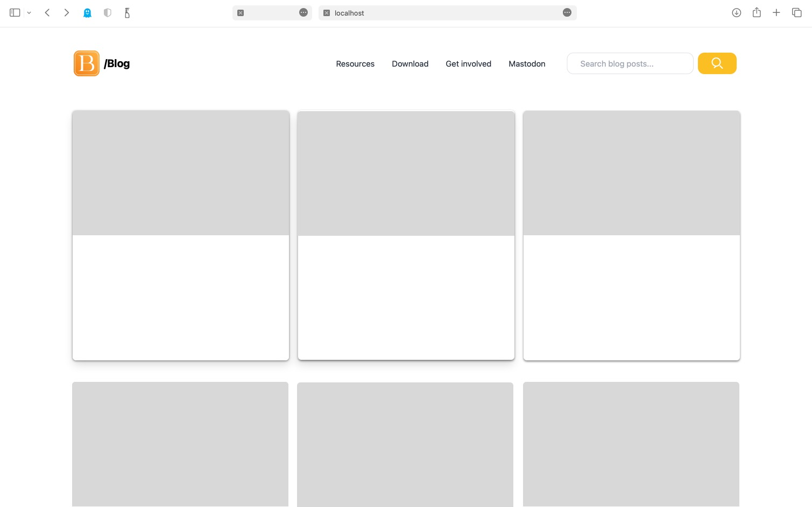

Introducing Beaver Notes v0.0.6 - Elevate Your Note-Taking Experience! 🚀
Daniele Rolli | July 27 2023
Welcome to a new chapter of productivity and efficiency with Beaver Notes v0.0.6! We are excited to announce the latest update to our privacy-focused note-taking app that empowers you to capture, organize, and manage your ideas effortlessly. This version brings a host of new features, including support for printing and PDF export, along with some crucial bug fixes for our Mac users. Let's dive into the enhancements that will transform your note-taking journey!
Printing and PDF Export - Share Your Ideas with Ease
With Beaver Notes v0.0.6, we're thrilled to introduce printing and PDF export support! Now you can easily print your notes and create professional-looking PDFs for sharing, collaboration, or archiving. Whether it's for a meeting, class, or personal use, our new features ensure your thoughts are presented with clarity and precision.
Second Linux Release - Embracing the Open-Source Community
We are thrilled to bring Beaver Notes to our Linux fans for the second time. With our commitment to open-source values, we celebrate inclusivity and embrace the Linux community, providing an intuitive note-taking app that enhances productivity on all major platforms.
Enhanced Compatibility for Mac Users
Our Mac users will enjoy an enhanced note-taking experience with crucial bug fixes that improve compatibility and performance. We value user feedback and strive to make Beaver Notes a seamless and enjoyable platform for all our users.
Privacy and Security - Your Data, Your Control
At Beaver Notes, we prioritize your privacy and data security. Our open-source approach ensures transparency, allowing you to review the code and trust the safety of your personal information. With Beaver Notes, your data remains in your hands and yours alone.
Join Our Vibrant Community - Share, Learn, and Collaborate
Join our subreddit r/BeaverNotes, a vibrant and growing community of note-takers who are passionate about productivity and creativity. Share your experiences, seek help, and discover new ways to optimize your note-taking journey.
Upgrade and Experience the Future of Note-Taking
Embrace the future of note-taking with Beaver Notes v0.0.6! Download the latest version from our official website or GitHub releases, and witness the power of simplicity, efficiency, and user-centric design.
Conclusion
Beaver Notes v0.0.6 marks a significant milestone with our second Linux release, reinforcing our commitment to inclusivity and open-source collaboration. We are excited to provide a feature-rich, privacy-focused, and user-friendly note-taking experience to all our users. Join our community, explore our app's new features, and celebrate this milestone with us! Together, let's shape the future of note-taking! 📝🚀
Discover more
Introducing the Beaver Blog: Your Gateway to Insightful Notes and More!
We are thrilled to announce the opening of the Beaver Blog, a platform that brings you the latest insights, tips, and updates on all things related to note-taking, productivity, and more.